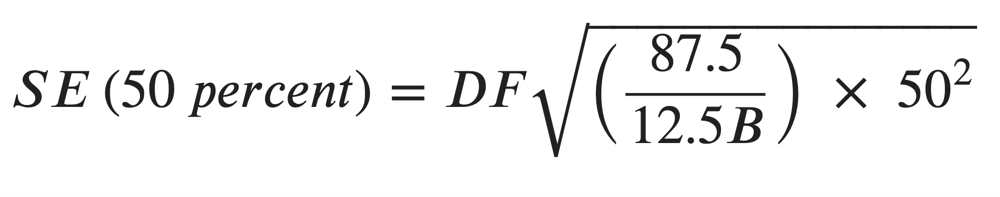
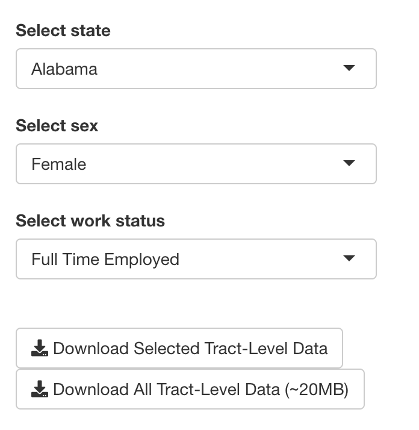
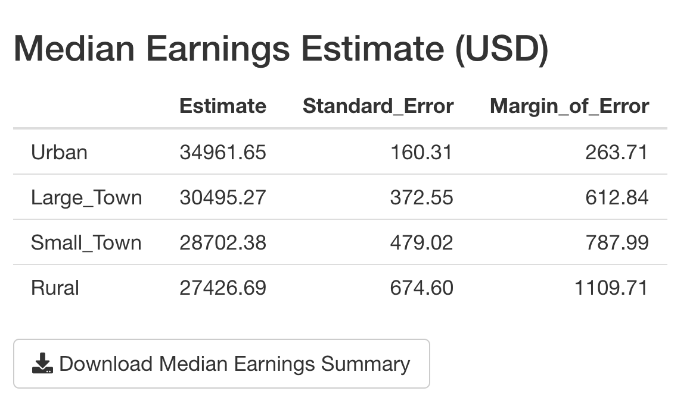
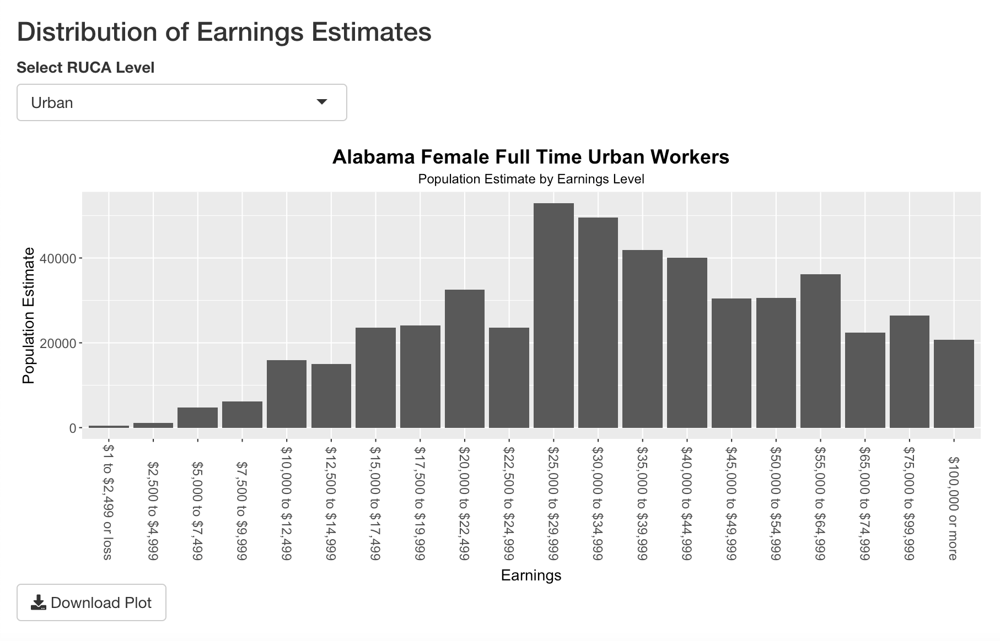
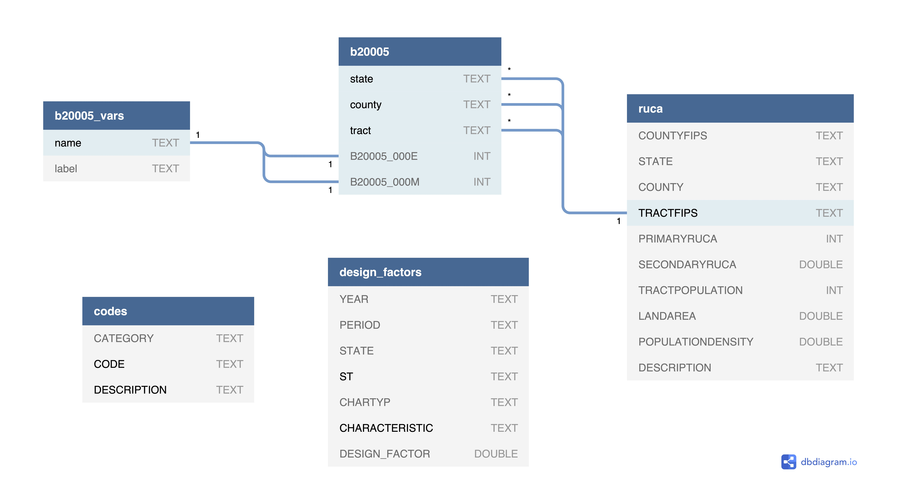
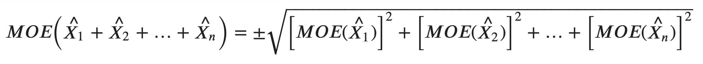
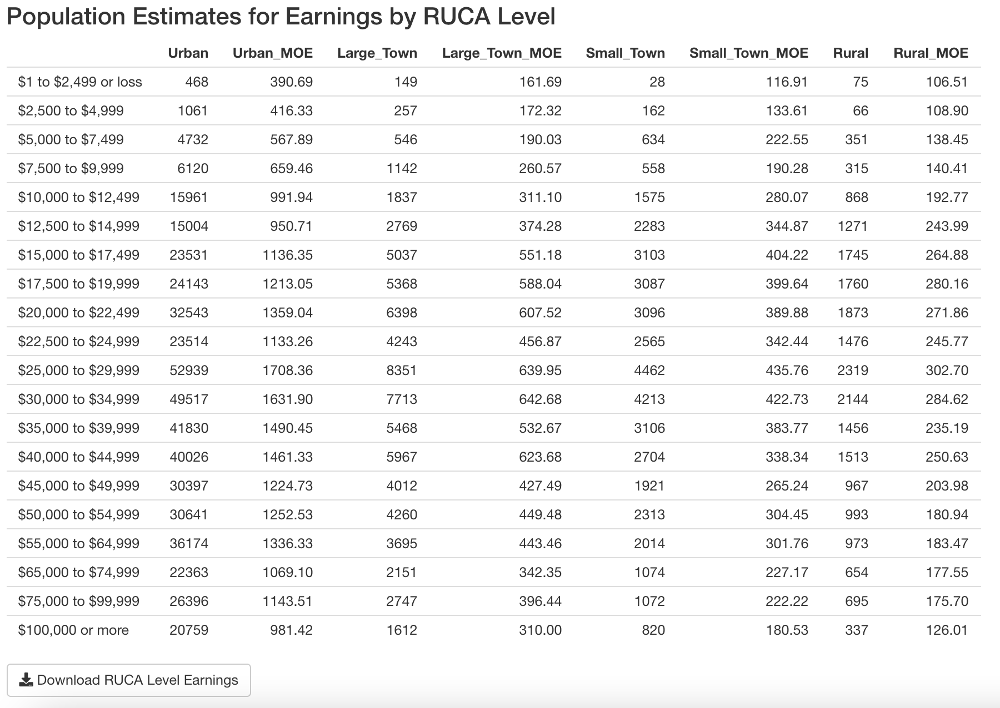

R Shiny Census App
In this blog post, I’ll walk through my development process for a U.S. Census data visualization web app I created using the Shiny package in R.
You can access the app at vbakshi.shinyapps.io/census-app.
Table of Contents
Backstory
I started this project by reading the handbook Understanding and Using American Community Survey Data: What State and Local Government Users Need to Know published by the U.S. Census Bureau. I recreated the handbook’s first case study in R, in which they make comparisons across geographic areas, create custom geographic areas from census tracts and calculate margins of error for derived estimates for Minnesota Census Tract 5-year earnings estimates.
During the process of recreating the derived median earnings estimate calculations, I was unable to recreate a key value from the handbook (the Standard Error for the 50% proportion, calculated to be 0.599) because I was unable to deduce the values used in the following formula referenced from page 17 of the PUMS Accuracy of the Data documentation:

The documentation defines B as the base, which is the calculated weighted total. I chose the value of 1.3 for the design factor DF since it corresponds to STATE = Minnesota, CHARTYP = Population, CHARACTERISTIC = Person Earnings/Income in the Design Factors CSV published by the Census Bureau.
I called the Census Bureau Customer Help Center for assistance and was transferred to a member of the ACS Data User Support team with whom I discussed my woes. He was unable to confirm the values of the design factor DF or B, and was unable to pull up the contact information for the statistical methodology team, so I emailed him my questions. After a few email exchanges, the statistical methodology team provided the following:
- DF = 1.3
- B = the total population estimate for which the median is being calculated, which is 82488 for the case study calculation (Minnesota Rural Male Full Time Workers)
- The term 95/5 is associated with the finite population correction factor (100 - f) divided by the sample fraction (f), where f = 5% (later on I note in the documentation that this 95/5 term is based on a 68% confidence interval). The data used in the handbook case study is from 5-year estimates. 1-year estimates sample 2.5% of the population, so the 5-year estimates represent a 5 * 2.5 = 12.5% sample. Instead of 95/5, the ratio becomes (100 - 12.5)/12.5 = 87.5/12.5
The updated formula is then:

I was able to calculate the median earnings estimate (and associated standard error and margin of error) within a few percent of the values given in the handbook. This provided me with confirmation that I was ready to expand my code to calculate median earnings estimates for other subgroups.
Codebase
I built this app using the R package Shiny which handles both the UI and the server. I store the data in a sqlite database and access it with queries written using the RSQLite package which uses the DBI API. The following sections break down the R scripts based on functionality. Click on the script name to navigate to that section.
app.R- UI and server functions to handle people inputs and plot/table/text outputs
prep_db.R- Import, clean, combine and then load data into the
census_app_db.sqlitedatabase
- Import, clean, combine and then load data into the
get_b20005_ruca_aggregate_earnings.R- Queries the database for earnings and associated margins of error for RUCA levels derived from Census Tracts
calculate_median.R- Derives estimate, standard of error and margin of error of median earnings for RUCA levels
format_query_result.R- Formats
calculate_medianquery results
- Formats
get_b20005_labels.R- Queries the database for descriptive labels of B20005 table variables
get_b20005_tract_earnings.R- Queries the database for Census Tract-level earnings and associated margins of error
get_b20005_states.R- Queries the SQLite database for a list of U.S. states
get_design_factor.R- Queries database for the design factor used for the median earnings estimation calculation
make_plot.R- Creates a bar plot object
app.R
A shiny app has three fundamental components:
ui <- (...)
server <- (...)
shinyApp(ui, server,...)The ui object holds all UI layout, input and output objects which define the front-end of your app. The server object holds all rendering functions which are assigned to outputs that appear on the UI. The shinyApp function takes a ui and server object (along with other arguments) and creates a shiny app object which can be run in a browser by passing it to the runApp function. Person inputs (such as selections in a dropdown) are assigned to a global input object.
What’s in my ui?
All of my UI objects are wrapped within a fluidPage call which returns a page layout which “consists of rows which in turn include columns” (from the docs).
My app’s UI has four sections:
- Dropdowns to select state, sex and work status for which the person using the app wants ACS 5-year earnings estimates

- A table with the estimate, standard error and margin of error for median earnings

- A bar plot of population estimates for earnings levels for the selected state, sex, work status and RUCA (Rural-Urban Commuting Areas) level

- A table with population estimates for earnings levels for each RUCA level for the selected state, sex and work status
Each section has a download button so that people can get the CSV files or plot image for their own analysis and reporting. Each section is separated with markdown('---') which renders an HTML horizontal rule (<hr>).
Dropdowns
Dropdowns (the HTML <select> element) are a type of UI Input. I define each with an inputId which is a character object for reference on the server-side, a label character object which is rendered above the dropdown, and a list object which defines the dropdown options.
selectInput(
inputId = "...",
label = "...",
choices = list(...)
)In some cases, I want the person to see a character object in the dropdown that is more human-readable (e.g. "Large Town") but use a corresponding input value in the server which is more computer-readable (e.g. "Large_Town). To achieve this, I use a named character vector where the names are displayed in the dropdown, and the assigned values are assigned to the global input:
selectInput(
inputId = "ruca_level",
label = "Select RUCA Level",
choices = list(
"RUCA LEVEL" = c(
"Urban" = "Urban",
"Large Town" = "Large_Town",
"Small Town" = "Small_Town",
"Rural" = "Rural"))
)In this case, if the person selects "Large Town" the value assigned to input$ruca_level is "Large_Town".
Tables
Tables (the HTML <table> element) are a type of UI Output. I define each with an outputId for reference in the server.
tableOutput(outputId = "...")Plot
Similarly, a plot (which is rendered as an HTML <img> element) is a type of UI Output. I define each with an outputId.
plotOutput(outputId = "...")What does my server do?
The server function has three parameters: input, output and session. The input object is a ReactiveValues object which stores all UI Input values, which are accessed with input$inputId. The output object similarly holds UI Output values at output$outputId. I do not use the session object in my app (yet).
My app’s server has four sections:
- Get data from the SQLite database
- Render table and plot outputs
- Prepare dynamic text (for filenames and the plot title)
- Handle data.frame and plot downloads
Get Data
There are three high-level functions which call query/format/calculation functions to return the data in the format necessary to produce table, text, download and plot outputs:
- The
earnings_datafunction passes the person-selected dropdown optionsinput$sex,input$work_statusandinput$stateto theget_b20005_ruca_aggregate_earningsfunction to get a query result from the SQLite database. That function call is passed toformat_earnings, which in turn is passed to thereactivefunction to make it a reactive expression. Only reactive expressions (and reactive endpoints in theoutputobject) are allowed to access theinputobject which is a reactive source. You can read more about Shiny’s “reactive programming model” in this excellent article.
earnings_data <- reactive(
format_earnings(
get_b20005_ruca_aggregate_earnings(
input$sex,
input$work_status,
input$state)))- The
design_factorfunction passes theinput$stateselection to theget_design_factorfunction which in turn is passed to thereactivefunction.
design_factor <- reactive(get_design_factor(input$state))- The
median_datafunction passes the return values fromearnings_data()anddesign_factor()to thecalculate_medianfunction which in turn is passed to thereactivefunction.
median_data <- reactive(calculate_median(earnings_data(), design_factor()))Render Outputs
I have two reactive endpoints for table outputs, and one endpoint for a plot. The table outputs use renderTable (with row names displayed) with the data.frame coming from median_data() and earnings_data(). The plot output uses renderPlot, and a helper function make_plot to create a bar plot of earnings_data() for a person-selected input$ruca_level with a title created with the helper function earnings_plot_title().
output$median_data <- renderTable(
expr = median_data(),
rownames = TRUE)
output$earnings_data <- renderTable(
expr = earnings_data(),
rownames = TRUE)
output$earnings_histogram <- renderPlot(
expr = make_plot(
data=earnings_data(),
ruca_level=input$ruca_level,
plot_title=earnings_plot_title()))Prepare Dynamic Text
I created four functions that generate filenames for the downloadHandler call when the corresponding downloadButton gets clicked, one function that generates the title used to generate the bar plot, and one function which takes computer-readable character objects (e.g. "Large_Town") and maps it to and returns a more human-readable character object (e.g. "Large Town"). I chose to keep filenames more computer-readable (to avoid spaces) and the plot title more human-readable.
get_pretty_text <- function(raw_text){
text_map <- c("M" = "Male",
"F" = "Female",
"FT" = "Full Time",
"OTHER" = "Other",
"Urban" = "Urban",
"Large_Town" = "Large Town",
"Small_Town" = "Small Town",
"Rural" = "Rural")
return(text_map[raw_text])
}
earnings_plot_title <- function(){
return(paste(
input$state,
get_pretty_text(input$sex),
get_pretty_text(input$work_status),
input$ruca_level,
"Workers",
sep=" "))
}
b20005_filename <- function(){
return(paste(
input$state,
get_pretty_text(input$sex),
input$work_status,
"earnings.csv",
sep="_"
))
}
median_summary_filename <- function() {
paste(
input$state,
get_pretty_text(input$sex),
input$work_status,
'estimated_median_earnings_summary.csv',
sep="_")
}
ruca_earnings_filename <- function() {
paste(
input$state,
get_pretty_text(input$sex),
input$work_status,
'estimated_median_earnings_by_ruca_level.csv',
sep="_")
}
earnings_plot_filename <- function(){
return(paste(
input$state,
get_pretty_text(input$sex),
input$work_status,
input$ruca_level,
"Workers.png",
sep="_"))
}Handle downloads
I have five download buttons in my app: two which trigger a download of a zip file with two CSVs, two that downloads a single CSV, and one that downloads a single PNG. The downloadHandler function takes a filename and a content function to write data to a file.
In order to create a zip file, I use the zip base package function and pass it a vector with two filepaths (to which data is written using the base package’s write.csv function) and a filename. I also specify the contentType as "application/zip". In the zip file, one of the CSVs contains a query result from the b20005 SQLite database table with earnings data, and the other file, "b20005_variables.csv" contains B20005 table variable names and descriptions. In order to avoid the files being written locally before download, I create a temporary directory with tempdir and prepend it to the filename to create the filepath.
For the bar plot image download, I use the ggplot2 package’s ggsave function, which takes a filename, a plot object (returned from the make_plot helper function) and the character object "png" (for the device parameter).
output$download_selected_b20005_data <- downloadHandler(
filename = "b20005_data.zip",
content = function(fname) {
# Create a temporary directory to prevent local storage of new files
temp_dir <- tempdir()
# Create two filepath character objects and store them in a list
# which will later on be passed to the `zip` function
path1 <- paste(temp_dir, '/', b20005_filename(), sep="")
path2 <- paste(temp_dir, "/b20005_variables.csv", sep="")
fs <- c(path1, path2)
# Create a CSV with person-selection input values and do not add a column
# with row names
write.csv(
get_b20005_earnings(input$state, input$sex, input$work_status),
path1,
row.names = FALSE)
# Create a CSV for table B20005 variable names and labels for reference
write.csv(
get_b20005_ALL_labels(),
path2,
row.names = FALSE)
# Zip together the files and add flags to maximize compression
zip(zipfile = fname, files=fs, flags = "-r9Xj")
},
contentType = "application/zip"
)
output$download_all_b20005_data <- downloadHandler(
filename = "ALL_B20005_data.zip",
content = function(fname){
path1 <- "ALL_B20005_data.csv"
path2 <- "b20005_variables.csv"
fs <- c(path1, path2)
write.csv(
get_b20005_earnings('ALL', 'ALL', 'ALL'),
path1,
row.names = FALSE)
write.csv(
get_b20005_ALL_labels(),
path2,
row.names = FALSE)
zip(zipfile = fname, files=fs, flags = "-r9Xj")
},
contentType = "application/zip"
)
output$download_median_summary <- downloadHandler(
filename = median_summary_filename(),
content = function(file) {
write.csv(median_data(), file)
}
)
output$download_earnings_plot <- downloadHandler(
filename = earnings_plot_filename(),
content = function(file) {
ggsave(
file,
plot = make_plot(
data=earnings_data(),
ruca_level=input$ruca_level,
plot_title=earnings_plot_title()),
device = "png")
}
)
output$download_ruca_earnings <- downloadHandler(
filename = ruca_earnings_filename(),
content = function(file) {
write.csv(earnings_data(), file)
}
)prep_db.R
This script is meant to be run locally, and is not deployed, as doing so would create a long delay to load the app.
Database Tables
The database diagram is shown below (created using dbdiagram.io):

I have five tables in my database:
b20005
Holds the data from the ACS 2015-2019 5-year detailed table B20005 (Sex By Work Experience In The Past 12 Months By Earnings In The Past 12 Months). This includes earnings estimates and margins of errors for Male and Female, Full Time and Other workers, for earning ranges (No earnings, $1 - $2499, $2500 - $4999, …, $100000 or more). The following table summarizes the groupings of the (non-zero earnings) variables relevant to this app:
| Variable | Demographic |
|---|---|
| B20005_003 to B20005_025 | Male Full Time Workers |
| B20005_029 to B20005_048 | Male Other Workers |
| B20005_050 to B20005_072 | Female Full Time Workers |
| B20005_076 to B20005_095 | Female Other Workers |
b20005_vars
Has the name (e.g. B20005_003E) and label (e.g. “Estimate!!Total!!Male!!Worked full-time, year-round in the past 12 months”) for all B20005 variables. Variable names ending with an E are estimates, and those ending with M are margins of error. - ruca contains RUCA (Rural-Urban Commuting Area) codes published by the U.S. Department of Agriculture Economic Research Service which classify U.S. census tracts using measures of population density. The following table shows the code ranges relevant to this app:
| RUCA Code | RUCA Level |
|---|---|
| 1-3 | Urban |
| 4-6 | Large Town |
| 7-9 | Small Town |
| 10 | Rural |
| 99 | Zero Population |
codes
olds state FIPS (Federal Information Processing Standards) codes and RUCA levels - design_factors contains Design Factors for different characteristics (e.g. Person Earnings/Income) which are used to determine “the standard error of total and percentage sample estimates”, and “reflect the effects of the actual sample design and estimation procedures used for the ACS.” (2015-2019 PUMS 5-Year Accuracy of the Data).
In prep_db.R, I use the DBI package, censusapi and base R functions to perform the following protocol for each table:
Load the Data
- For tables
b20005andb20005_vars, I use thecensusapi::getCensusandcensusapi::listCensusMetadatarepsectively to get the data
# TABLE b20005_vars ------------------------------
b20005_vars <- listCensusMetadata(
name = 'acs/acs5',
vintage = 2015,
type = 'variables',
group = 'B20005')
# TABLE b20005 ----------------------------------
b20005 <- getCensus(
name = 'acs/acs5',
region = "tract:*",
regionin = regionin_value,
vintage = 2015,
vars = b20005_vars$name,
key="..."
)- For tables
codes,ruca, anddesign_factorsI load the data from CSVs that I either obtained (in the case of the Design Factors) or created (in the case of the codes and RUCA levels)
# TABLE codes ----------------------------------
state_codes <- read.csv(
"data/state_codes.csv",
colClasses = c(
"character",
"character",
"character")
)
ruca_levels <- read.csv(
"data/ruca_levels.csv",
colClasses = c(
"character",
"character",
"character")
)Create Tables
Once the data is ready, I use DBI::dbExecute to run a SQLite command to create each table. The relationships shown in the image above dictate which fields create the primary key (in some cases, a compound primary key) as listed below:
| Table | Primary Key | Notes |
|---|---|---|
b20005 |
(state, county, tract)) |
Foreign key for table ruca |
b20005_vars |
name |
e.g. B20005_001E |
ruca |
TRACTFIPS |
Foreign key for table b20005 |
codes |
(CODE, DESCRIPTION) |
e.g. (1, "Urban") |
design_factors |
(ST, CHARACTERISTIC) |
e.g. ("27", "Person Earnings/Income") |
Write to Tables
Once the table has been created in the database, I write the data.frame to the corresponding table with the following call:
dbWriteTable(census_app_db, "<table name>", <data.frame>, append = TRUEget_b20005_ruca_aggregate_earnings.R
The function inside this script (with the same name), receives inputs from the server, sends queries to the database and returns the results. This process involves two steps:
Get Variable Names
The person using the app selects Sex (M or F), Work Status (Full Time or Other) and State (50 states + D.C. + Puerto Rico) for which they want to view and analyze earnings data. As shown above, different variables in table b20005 correspond to different sexes and work statuses, and each tract for which there is all that earnings data resides in a given state.
I first query b20005_vars to get the relevent variables names which will be used in the query to b20005, as shown below. names that end with “M” (queried with the wilcard '%M') are for margins of error and those that end with “E” (wildcard '%E') are for estimates.
vars <- dbGetQuery(
census_app_db,
"SELECT name FROM b20005_vars
WHERE label LIKE $label_wildcard
AND name LIKE '%M'",
params=list(label_wildcard=label_wildcard))The b20005_vars.label column holds long string labels (which follow a consistent pattern, which is captured by the $label_wildcard) that describe the variable’s contents. Here are a couple of examples:
b20005_vars.name |
b20005_vars.label |
|---|---|
B20005_053E |
"Estimate!!Total!!Female!!Worked full-time, year-round in the past 12 months!!With earnings") |
B20005_076M |
"Margin of Error!!Total!!Female!!Other!!With earnings!!$1 to $2,499 or loss" |
Since the label string contains the sex and work status, I assign a label_wildcard based on the person inputs from the sex and work status UI dropdowns.
# Prepare wildcard for query parameter `label_wildcard`
if (sex == 'M') {
if (work_status == 'FT') { label_wildcard <- "%!!Male!!Worked%" }
if (work_status == 'OTHER') { label_wildcard <- "%!!Male!!Other%" }
}
if (sex == 'F') {
if (work_status == 'FT') { label_wildcard <- "%!!Female!!Worked%" }
if (work_status == 'OTHER') { label_wildcard <- "%!!Female!!Other%" }
}Derive RUCA Level Estimates and MOE
Once the variables are returned, the actual values are queried from b20005, grouped by RUCA level. The ACS handbook Understanding and Using American Community Survey Data: What All Data Users Need to Know shows how to calculate that margin of error for derived estimates. In our case, the margin of error for a RUCA level such as “Urban” for a given state is derived from the margin of error of individual Census Tracts using the formula below:

Translating this to a SQLite query:
# Construct query string to square root of the sum of margins of error squared grouped by ruca level
query_string <- paste0(
"SQRT(SUM(POWER(b20005.", vars$name, ", 2))) AS ", vars$name, collapse=",")Where vars$name is a list of variable names, and the collapse parameter converts a list or vector to a string. The beginning of that query_string looks like:
"SQRT(SUM(POWER(b20005.B20005_001M, 2))) AS B20005_001M, SQRT(..."The query is further built by adding the rest of the SQL statements:
query_string <- paste(
"SELECT ruca.DESCRIPTION,",
query_string,
"FROM 'b20005'
INNER JOIN ruca
ON b20005.state || b20005.county || b20005.tract = ruca.TRACTFIPS
WHERE
b20005.state = $state
GROUP BY ruca.DESCRIPTION"
)The ruca.DESCRIPTION column, which contains RUCA levels (e.g. "Urban") is joined onto b20005 from the ruca table using the foreign keys representing the Census Tract FIPS code (TRACTFIPS for the ruca table and the concatenated field state || county || tract for b20005). The $state parameter is assigned the person-selected state input, and the columns are aggreaggated by RUCA levels (i.e. GROUP BY ruca.DESCRIPTION). Finally, the RUCA level and square root of the sum of MOEs squared are SELECTed from the joined tables.
The query for estimates is simpler than MOEs, because estimates only need to be summed over RUCA levels:
# Construct a query to sum estimates grouped by ruca level
query_string <- paste0("SUM(b20005.",vars$name, ") AS ", vars$name, collapse=",")get_b20005_ruca_aggregate_earnings returns the query result data.frames in a named list:
return(list("estimate" = estimate_rs, "moe" = moe_rs))calculate_median.R
The procedure for calculating a median earnings data estimate is shown starting on page 17 of the Accuracy of PUMS documentation. This script follows it closely:
Create Frequency Distribution
- Obtain the weighted frequency distribution for the selected variable.
datais adata.framewith earning estimate values. The rows are the earning ranges and the columns areruca_levels:
cum_percent <- 100.0 * cumsum(data[ruca_level]) / sum(data[ruca_level])Calculate Weighted Total
- Calculate the weighted total to yield the base, B.
B <- colSums(data[ruca_level])Approximate Standard Error
- Approximate the standard error of a 50 percent proportion using the formula in Standard Errors for Totals and Percentages. The
design_factoris passed to this function by the server who uses theget_design_factorfunction explained below to query thedesign_factorstable.
se_50_percent <- design_factor * sqrt(87.5/(12.5*B) * 50^2)Calculate Median Estimate Bounds
- Create the variable p_lower by subtracting the SE from 50 percent. Create p_upper by adding the SE to 50 percent.
p_lower <- 50 - se_50_percent
p_upper <- 50 + se_50_percent- Determine the categories in the distribution that contain p_lower and p_upper…
# Determine the indexes of the cumulative percent data.frame corresponding
# to the upper and lower bounds of the 50% proportion estimate
cum_percent_idx_lower <- min(which(cum_percent > p_lower))
cum_percent_idx_upper <- min(which(cum_percent > p_upper)).._If p_lower and p_upper fall in the same category, follow step 6. If p_lower and p_upper fall in different categories, go to step 7…_
# The median estimation calculation is handled differently based on
# whether the upper and lower bound indexes are equal
if (cum_percent_idx_lower == cum_percent_idx_upper) {- If p_lower and p_upper fall in the same category, do the following:
- Define A1 as the smallest value in that category.
# A1 is the minimum earnings value (e.g. 30000) of the earning range
# (e.g. 30000 to 34999) corresponding to the lower bound cumulative percent
A1 <- earnings[cum_percent_idx_lower, "min_earnings"]- Define A2 as the smallest value in the next (higher) category.
# A2 is the minimum earnings value of the earning range above the
# earning range corresponding to the upper bound cumulative percent
A2 <- earnings[cum_percent_idx_lower + 1, "min_earnings"]- Define C1 as the cumulative percent of units strictly less than A1.
# C1 is the cumulative percentage of earnings one row below the
# lower bound cumulative percent
C1 <- cum_percent[cum_percent_idx_lower - 1, ]- Define C2 as the cumulative percent of units strictly less than A2.
# C2 is the cumulative percentage of the earnings below the
# lower bound cumulative percent
C2 <- cum_percent[cum_percent_idx_lower, ]- Use the following formulas to approximate the lower and upper bounds for a confidence interval about the median:
# the lower bound of the median
lower_bound <- (p_lower - C1) / (C2 - C1) * (A2 - A1) + A1
# the upper bound of the median
upper_bound <- (p_upper - C1) / (C2 - C1) * (A2 - A1) + A1- If p_lower and p_upper fall in different categories, do the following:
- For the category containing p_lower: Define A1, A2, C1, and C2 as described in step 6. Use these values and the formula in step 6 to obtain the lower bound.
# A1, A2, C1 and C2 are calculated using the lower bound cumulative percent
# to calculate the lower bound of the median estimate
A1 <- earnings[cum_percent_idx_lower, "min_earnings"]
A2 <- earnings[cum_percent_idx_lower + 1, "min_earnings"]
C1 <- cum_percent[cum_percent_idx_lower - 1, ]
C2 <- cum_percent[cum_percent_idx_lower, ]
lower_bound <- (p_lower - C1) / (C2 - C1) * (A2 - A1) + A1- For the category containing p_upper: Define new values for A1, A2, C1, and C2 as described in step 6. Use these values and the formula in step 6 to obtain the upper bound.
# A1, A2, C1 and C2 are calculated using the upper bound cumulative percent
# to calculate the upper bound of the median estimate
A1 <- earnings[cum_percent_idx_upper, "min_earnings"]
A2 <- earnings[cum_percent_idx_upper + 1, "min_earnings"]
C1 <- cum_percent[cum_percent_idx_upper - 1,]
C2 <- cum_percent[cum_percent_idx_upper,]
upper_bound <- (p_upper - C1) / (C2 - C1) * (A2 - A1) + A1- Use the lower and upper bounds approximated in steps 6 or 7 to approximate the standard error of the median. SE(median) = 1/2 X (Upper Bound – Lower Bound)
# The median earning estimate is the average of the upper and lower bounds
# of the median estimates calculated above in the if-else block
median_earnings <- 0.5 * (lower_bound + upper_bound)
# The median SE is half the distance between the upper and lower bounds
# of the median estimate
median_se <- 0.5 * (upper_bound - lower_bound)
# The 90% confidence interval critical z-score is used to calculate
# the margin of error
median_90_moe <- 1.645 * median_seReshape the Data
Finally, a data.frame is returned, which will be displayed in a tableOutput element.
# A data.frame will be displayed in the UI
median_data <- data.frame(
"Estimate" = median_earnings,
"SE" = median_se,
"MOE" = median_90_moe
)format_query_result.R
The purpose of this function is to receive two data.frame objects, one for earnings estimate values, and one for the corresponding moe values, and return a single data.frame which is ready to be displayed in a tableOutput.
Extract data.frame Objects from List
Since get_b20005_ruca_aggregate_earnings returns a named list, I first pull out the estimate and moe data.frame objects:
# Pull out query result data.frames from the list
estimate <- rs[["estimate"]]
moe <- rs[["moe"]]Reshape data.frame Objects
These data.frame objects have RUCA levels in the column DESCRIPTION and one column for each population estimate. For example, the estimate for Alabama Full Time Female workers looks like this:
DESCRIPTION |
… | B20005_053E |
B20005_054E |
B20005_055E |
… | |
|---|---|---|---|---|---|---|
| 1 | Large Town |
… | 149 | 257 | 546 | … |
| 2 | Rural |
… | 75 | 66 | 351 | … |
| 3 | Small Town |
… | 28 | 162 | 634 | … |
| 4 | Urban |
… | 468 | 1061 | 4732 | … |
| 5 | Zero Population |
… | 0 | 0 | 0 | … |
The moe data.frame has a similar layout.
However, in the UI, I want the table to look like this:

To achieve this, I first transpose the estimate and moe data.frames…
# Transpose the query results
col_names <- estimate[,"DESCRIPTION"]
estimate <- t(estimate[-1])
colnames(estimate) <- col_names
col_names <- moe[,"DESCRIPTION"]
moe <- t(moe[-1])
colnames(moe) <- col_names…then zip them together, keeping in mind that not all states have tracts designated with all RUCA levels:
# Create a mapping to make column names more computer-readable
format_ruca_level <- c(
"Urban" = "Urban",
"Large Town" = "Large_Town",
"Small Town" = "Small_Town",
"Rural" = "Rural",
"Zero Population" = "Zero_Population")
# bind together estimate and corresponding moe columns
# some states do not have all RUCA levels
# for example, Connecticut does not have "Small Town" tracts
# Create empty objects
output_table <- data.frame(temp = matrix(NA, nrow = nrow(estimate), ncol = 0))
col_names <- c()
for (ruca_level in c("Urban", "Large Town", "Small Town", "Rural")) {
if (ruca_level %in% colnames(estimate)) {
output_table <- cbind(output_table, estimate[,ruca_level], moe[,ruca_level])
# paste "_MOE" suffix for MOE columns
col_names <- c(
col_names,
format_ruca_level[[ruca_level]],
paste0(format_ruca_level[[ruca_level]], "_MOE"))
}
}
# Replace old names with more computer-readable names
colnames(output_table) <- col_namesAdd Descriptive Labels
Finally, merge the output_table data.frame with labels (long form description of the B20005 variables) which are retrieved from the database using the get_b20005_labels function explained later on in this post. Remember that the label is delimited with "!!" and the last substring contains earnings ranges (e.g. “$30,000 to $34,999”):
# name rows as long-form labels, by splitting them by '!!' and
# grabbing the last chunk which has dollar ranges e.g.
# $30000 to $34999
output_table <- merge(output_table, labels, by.x = 0, by.y = "name")
split_label <- data.frame(
do.call(
'rbind',
strsplit(as.character(output_table$label),'!!',fixed=TRUE)))
rownames(output_table) <- split_label$X6get_b20005_labels.R
This script contains two helper functions to retrieve the label column from the b20005_vars table.
Get Earnings Population Estimate Labels
The first one, get_b20005_labels retrieves the variable name and label for earning range strings (e.g. “$30,000 to $34,999”):
get_b20005_labels <- function() {
census_app_db <- dbConnect(RSQLite::SQLite(), "census_app_db.sqlite")
rs <- dbGetQuery(
census_app_db,
"SELECT
name, label
FROM 'b20005_vars'
WHERE
label LIKE '%$%'
ORDER BY name"
)
dbDisconnect(census_app_db)
return(rs)
}Get All Labels
The second function, get_b20005_ALL_labels returns the whole table:
get_b20005_ALL_labels <- function() {
census_app_db <- dbConnect(RSQLite::SQLite(), "census_app_db.sqlite")
rs <- dbGetQuery(
census_app_db,
"SELECT
name, label
FROM 'b20005_vars'
ORDER BY name"
)
dbDisconnect(census_app_db)
return(rs)
}get_b20005_tract_earnings.R
This function is similar to get_b20005_ruca_aggregate_earnings but does not aggregate by RUCA level, and also includes Census Tracts that are not designated a RUCA level. The label_wildcard is constructed the same way as before.
Get Variable Names
The variable names are obtained for both margin of error and estimates in the same query:
# Get b20005 variable names (estimates and moe)
vars <- dbGetQuery(
census_app_db,
"SELECT name FROM b20005_vars
WHERE label LIKE $label_wildcard",
params=list(label_wildcard=label_wildcard)
)Join Tables
The tract-level earnings are queried with the following, using a LEFT JOIN between b20005 and ruca tables to include tracts that do not have a RUCA level.
# Construct query to get tract-level earnings data
query_string <- paste(
"SELECT ruca.DESCRIPTION,
b20005.state || b20005.county || b20005.tract AS TRACTFIPS,",
paste0(vars$name, collapse=","),
"FROM b20005
LEFT JOIN ruca
ON b20005.state || b20005.county || b20005.tract = ruca.TRACTFIPS
WHERE
b20005.state LIKE $state")get_b20005_states.R
This function retrieves state codes and names from the codes table, and is used to assign choices to selectInput dropdowns. "United States" which has a FIPS code of "00" is excluded because the b20005 table contains state-level data only. The query result is sorted by the state name so that the dropdown menu choices are in ascending alphabetical order.
states <- dbGetQuery(
census_app_db,
"SELECT DESCRIPTION, CODE
FROM codes
WHERE CATEGORY = 'state'
AND CODE <> '00'
ORDER BY DESCRIPTION")get_design_factor.R
This function retrieves a single numeric Design Factor for the “Person Earnings/Income” characteristic from the design_factors table for a given state parameter:
rs <- dbGetQuery(
census_app_db,
"SELECT DESIGN_FACTOR FROM design_factors
WHERE ST = $state
AND CHARACTERISTIC = 'Person Earnings/Income'",
params = list(state=state))
rs <- as.numeric(rs[1, "DESIGN_FACTOR"])make_plot.R
This is function creates a ggplot.bar_plot object using a given data, RUCA level, and title. The x-axis labels are rotated, both axis labels are resized, and plot title and subtitle are formatted.
make_plot <- function(data, ruca_level, plot_title){
# Prepare x-axis factor for `aes` parameter
xs <- rownames(data)
xs <- factor(xs, xs)
bar_plot <- ggplot(
data=data,
aes(x=xs, y=get(ruca_level))) +
geom_bar(stat='identity') +
theme(
# Rotate x-axis labels
axis.text.x=element_text(
angle = -90,
vjust = 0.5,
hjust=1,
size=12),
# Resize x-axis labels and move them away from axis
axis.title.x=element_text(vjust=-0.75,size=14),
# Resize y-axis labels
axis.text.y=element_text(size=12),
axis.title.y=element_text(size=14),
# Set plot title and subtitle font and placement
plot.title = element_text(size = 18, hjust=0.5, face='bold'),
plot.subtitle = element_text(size = 12, hjust=0.5)) +
labs(x="Earnings", y="Population Estimate") +
ggtitle(plot_title, subtitle="Population Estimate by Earnings Level")
return (bar_plot)
}